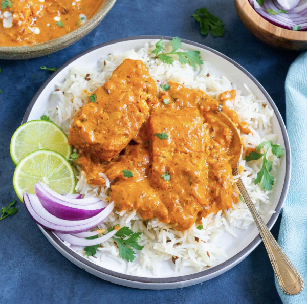

My mom wanted something different because chicken tikka masala started to feel repetitive after a while, so she decided to try making it with salmon instead. We needed something besides chicken for a change!
The flavors turned out to work really well together. This recipe combines our love of Indian spices with fresh salmon for a dish that always feels special and a little unexpected.
| Ingredient | Amount |
|---|---|
| Salmon fillets | 1 lb (about 2 fillets) |
| Plain yogurt | 1/2 cup |
| Lemon juice | 2 tbsp |
| Garam masala | 2 tsp |
| Ground cumin | 1 tsp |
| Ground coriander | 1 tsp |
| Salt | 1/2 tsp |
| Olive oil | 2 tbsp |
| Onion, chopped | 1 medium |
| Garlic, minced | 3 cloves |
| Ginger, grated | 1 tbsp |
| Tomato puree | 1 cup |
| Heavy cream or coconut milk | 1/2 cup |
| Instructions:
1. Mix yogurt, lemon juice, garam masala, cumin, coriander, and salt. Marinate salmon for 1 hour. 2. Grill or pan-sear salmon until just cooked. Set aside. 3. In a pan, heat oil. Sauté onion, garlic, and ginger until golden. 4. Add tomato puree, cook 5 mins. Stir in cream (or coconut milk), simmer 2 mins. 5. Add salmon to sauce, simmer 5 mins. Serve with rice. |
|
| Prep Time | 20 mins (plus 1 hr marinate) |
| Servings | 4 |